A sensible starting point for any data analysis is to look at each important variable on its own. Univariate graphs do exactly this: they show the distribution of a single variable at a time. That variable might be categorical (for example diet, taxonomic order, or conservation status) or quantitative (such as sleep duration, body weight, or brain weight).
Throughout this chapter we use the msleep dataset, which contains sleep times and weights for 83 different mammals. We focus on three variables: the diet (vore) and taxonomic order (order) of the animals, and the total amount of sleep they get (sleep_total).
Categorical variables
Both the diet of the mammals and their taxonomic order are categorical variables. The distribution of a single categorical variable is most commonly shown using a bar chart. Other options include pie charts, and—less frequently—tree maps or waffle charts.
Bar charts
Below, we plot a simple bar chart to display the distribution of mammals by diet (vore).
Code
library(ggplot2)data(msleep, package ="ggplot2")# plot the distribution of diet (vore)# We filter out NAs for a cleaner plotlibrary(dplyr)msleep_clean <- msleep %>%filter(!is.na(vore))ggplot(msleep_clean, aes(x = vore)) +geom_bar()
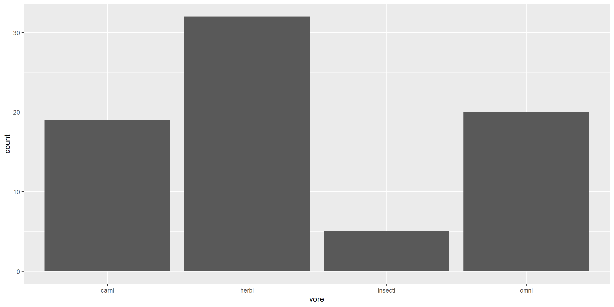
From this plot we can immediately see that most mammals in this dataset are herbivores, followed closely by omnivores and carnivores, with insectivores being the smallest group.
Percentages
Instead of showing raw counts, bars can also represent percentages. In a bar chart, aes(x = vore) is shorthand for aes(x = vore, y = after_stat(count)), where count is the frequency in each category. By working with this quantity explicitly, we can convert counts into percentages.
Code
```{r}# plot the distribution as percentagesggplot(msleep_clean,aes(x = vore, y =after_stat(count/sum(count)))) +geom_bar() +labs(x ="Diet",y ="Percent",title ="Mammals by diet") +scale_y_continuous(labels = scales::percent)```
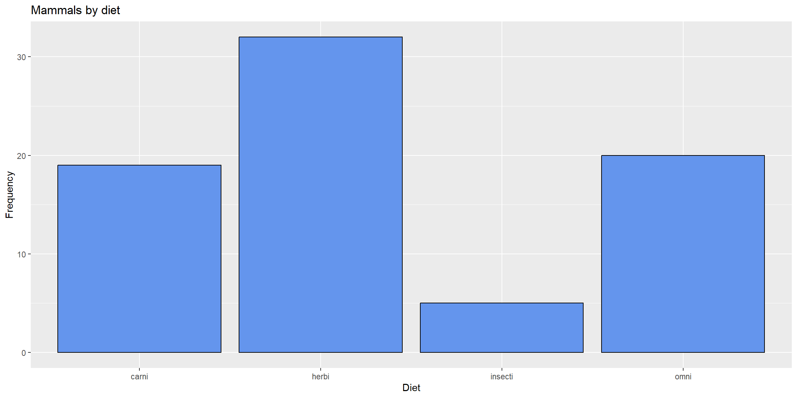
Here, the scales package is used to format the y-axis labels as percentages.
Sorting categories
It is often helpful to order categories by their frequency. To do this, we first calculate the counts explicitly and then reorder the categories using reorder(). Setting stat = "identity" tells ggplot2 not to compute counts internally.
Code
```{r}# calculate number of mammals in each diet categoryplotdata <- msleep_clean %>%count(vore)```
The resulting dataset is shown below:
vore
n
carni
19
herbi
32
insecti
5
omni
20
We can now use this dataset to create a sorted bar chart.
Code
```{r}# plot the bars in ascending orderggplot(plotdata,aes(x =reorder(vore, n), y = n)) +geom_bar(stat="identity") +labs(x ="Diet",y ="Frequency",title ="Mammals by diet")```
The bars are ordered from smallest to largest frequency. Using reorder(vore, -n) would reverse this order.
Labelling bars
Sometimes it is useful to display the numerical values directly on the bars.
Code
```{r}# plot the bars with numeric labelsggplot(plotdata,aes(x = vore, y = n)) +geom_bar(stat="identity") +geom_text(aes(label = n), vjust=-0.5) +labs(x ="Diet",y ="Frequency",title ="Mammals by diet")```
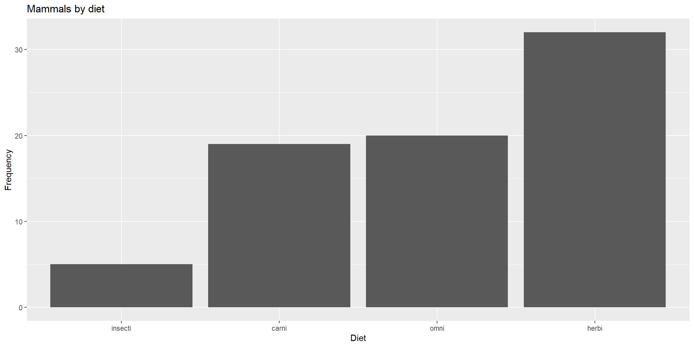
Here, geom_text() adds the labels, and vjust controls their vertical positioning.
Putting these ideas together, we can create a bar chart showing percentages, ordered from most to least frequent, and labelled accordingly.
Code
library(scales)plotdata <- msleep_clean %>%count(vore) %>%mutate(pct = n /sum(n),pctlabel =paste0(round(pct*100), "%"))# plot the bars as percentages,# in descending order with bar labelsggplot(plotdata,aes(x =reorder(vore, -pct), y = pct)) +geom_bar(stat="identity", fill="indianred3", color="black") +geom_text(aes(label = pctlabel), vjust=-0.25) +scale_y_continuous(labels = percent) +labs(x ="Diet",y ="Percent",title ="Mammals by diet")
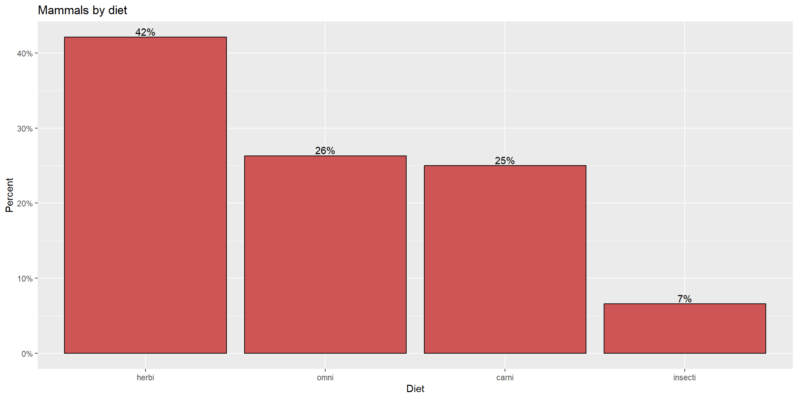
Overlapping labels
When there are many categories or when labels are long, axis labels can overlap. This is clear when plotting the taxonomic order of the mammals.
Code
```{r}# basic bar chart with overlapping labelsggplot(msleep, aes(x=order)) +geom_bar() +labs(x ="Taxonomic Order",y ="Frequency",title ="Mammals by Order")```
One solution is to flip the axes.
Code
```{r}# horizontal bar chartggplot(msleep, aes(x = order)) +geom_bar() +labs(x ="",y ="Frequency",title ="Mammals by Order") +coord_flip()```
Alternatively, labels can be rotated.
Code
```{r}# bar chart with rotated labelsggplot(msleep, aes(x=order)) +geom_bar() +labs(x ="",y ="Frequency",title ="Mammals by Order") +theme(axis.text.x =element_text(angle =45, hjust =1))```
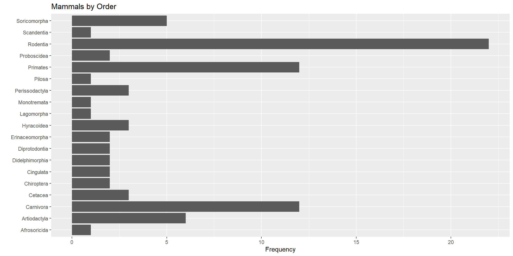
A third option is to stagger the labels by inserting line breaks.
Code
```{r}# bar chart with staggered labelslbls <-paste0(c("","\n"), unique(msleep$order))# Note: In real usage, ensure labels match factor levels orderggplot(msleep,aes(x=factor(order, labels = lbls))) +geom_bar() +labs(x ="",y ="Frequency",title ="Mammals by Order")```
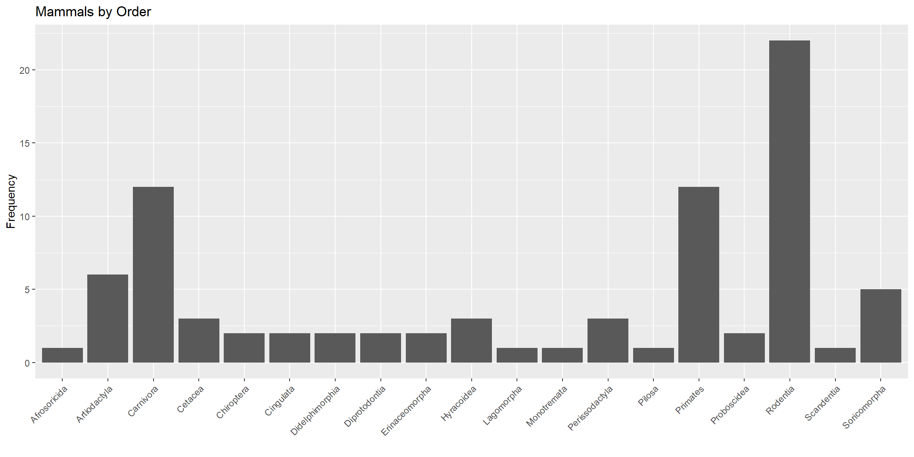
In practice, it is usually best to avoid rotated labels where possible, as they are harder to read and increase cognitive load for the reader.
Pie charts
Pie charts are often debated in statistics. For comparing category frequencies, bar charts are generally superior because humans judge lengths more accurately than areas. However, if the goal is to show how each category relates to the whole, and there are only a few categories, pie charts can still be useful.
A pie chart in ggplot2 is essentially a bar chart plotted on a polar coordinate system.
Code
```{r}# Prepare data for pie chartplotdata <- msleep_clean %>%count(vore) %>%mutate(prop = n /sum(n)) %>%mutate(label = scales::percent(prop))# Create pie chartggplot(plotdata, aes(x ="", y = prop, fill = vore)) +geom_bar(stat ="identity", width =1, color ="white") +coord_polar("y", start =0) +theme_void() +labs(title ="Mammals by diet")```
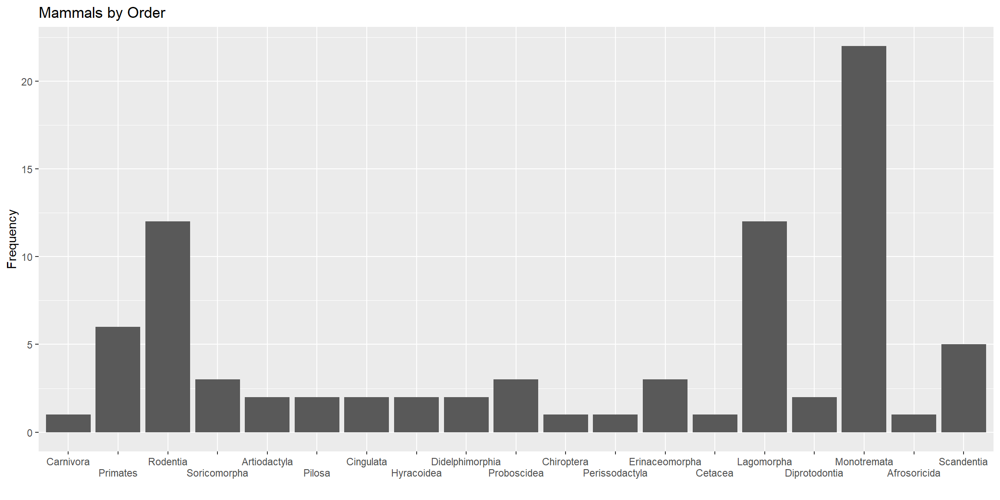
We use coord_polar("y") to transform the bar chart into a circle. theme_void() is used to remove the background, axis grid, and labels that are not necessary for a pie chart.
To place labels inside the slices, we can use geom_text() with position_stack().
Code
```{r}# Create pie chart with labelsggplot(plotdata, aes(x ="", y = prop, fill = vore)) +geom_bar(stat ="identity", width =1, color ="white") +coord_polar("y", start =0) +geom_text(aes(label = label),position =position_stack(vjust =0.5),color ="white",size =4) +theme_void() +labs(title ="Mammals by diet") +theme(legend.position ="right")```
This plot makes it clear, for example, that roughly 42% of the mammals in this dataset are herbivores.
Tree maps
Tree maps provide another alternative to pie charts and are particularly useful when there are many categories, such as the taxonomic orders in our dataset.
Code
library(treemapify)# create a treemap of mammal ordersplotdata <- msleep %>%count(order)ggplot(plotdata,aes(fill = order, area = n)) +geom_treemap() +labs(title ="Mammals by Order")
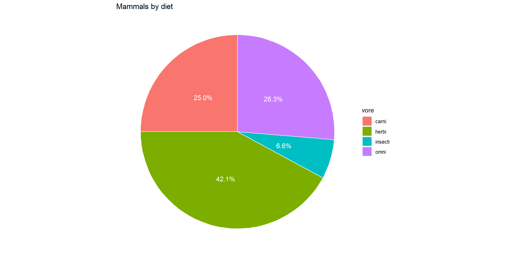
Adding labels makes the plot more informative.
Code
```{r}# create a treemap with tile labelsggplot(plotdata,aes(fill = order, area = n, label = order)) +geom_treemap() +geom_treemap_text(colour ="white", place ="centre") +labs(title ="Mammals by Order") +theme(legend.position ="none")```
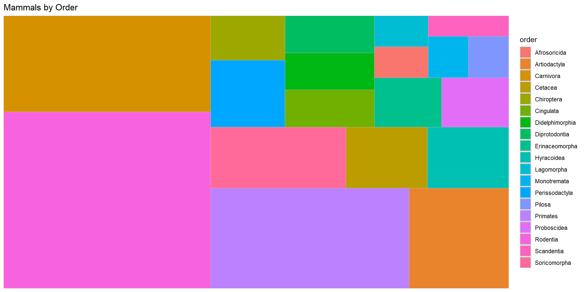
Waffle charts
A waffle chart (also called a grid plot or square pie chart) represents proportions using a grid of squares. While dedicated packages exist, we can create a waffle chart in standard ggplot2 by treating the data as a grid of tiles (dedicated packages sometimes get removed so it’s better to have a more sustainable way to make graphs that don’t rely on external packages).
We begin by sorting the data and assigning logical x and y coordinates to each mammal to create a 10-column grid.
Code
```{r}# Prepare data: Sort by diet to cluster colorswaffle_data <- msleep_clean %>%arrange(vore) %>%mutate(# Create x and y coordinates for a 10-column gridx = (row_number() -1) %%10,y = (row_number() -1) %/%10 )# Create the chart using geom_tileggplot(waffle_data, aes(x = x, y = y, fill = vore)) +geom_tile(color ="white") +# white borders create the "grid" lookcoord_fixed() +# ensures squares remain squaretheme_void() +# removes axes and backgroundslabs(title ="Mammals by Diet",caption ="1 square = 1 mammal")```
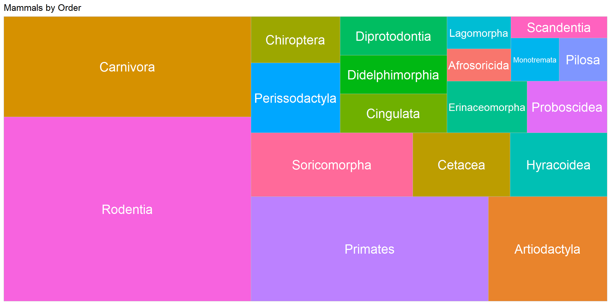
This chart displays every individual mammal as a single square, making it easy to visualise the sample size alongside the proportions.
Quantitative variables
In the msleep dataset, sleep_total (total sleep in hours) is a quantitative variable. Common ways to visualise the distribution of a single quantitative variable include histograms, kernel density plots, and dot plots.
Histograms
Histograms are the most widely used tool for visualising quantitative data. The range of values is divided into adjacent bins of equal width, and the number of observations in each bin is shown as a bar.
Code
library(ggplot2)# plot the sleep distribution using a histogramggplot(msleep, aes(x = sleep_total)) +geom_histogram() +labs(title ="Mammal sleep distribution",x ="Total Sleep (hours)")
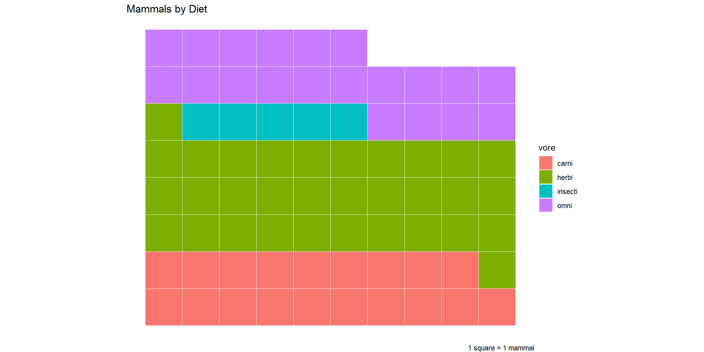
The distribution appears somewhat bimodal, with many mammals sleeping around 10 hours, but a significant number sleeping much less or much more.
Bins and bandwidths
The choice of the number of bins (or equivalently the bin width) has a large impact on the appearance of a histogram. The default is 30 bins, but it is often useful to experiment.
Code
```{r}# plot the histogram with 15 binsggplot(msleep, aes(x = sleep_total)) +geom_histogram(fill ="cornflowerblue",color ="white",bins =15) +labs(title="Mammal sleep distribution",subtitle ="number of bins = 15",x ="Total Sleep (hours)")```
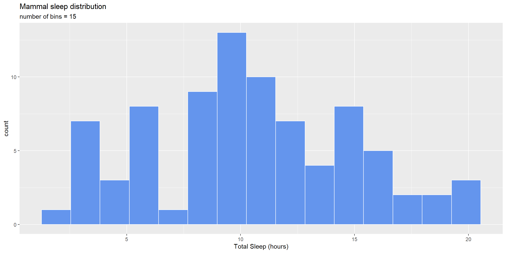
Alternatively, you can specify the bin width directly.
Code
```{r}# plot the histogram with a binwidth of 2 hoursggplot(msleep, aes(x = sleep_total)) +geom_histogram(fill ="cornflowerblue",color ="white",binwidth =2) +labs(title="Mammal sleep distribution",subtitle ="binwidth = 2 hours",x ="Total Sleep (hours)")```
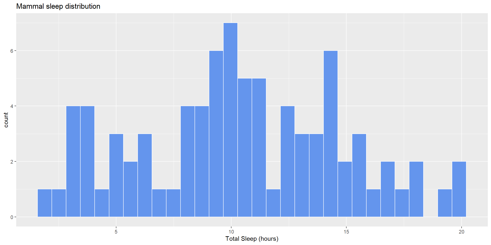
As before, the y-axis can show counts or percentages.
A kernel density plot provides a smooth alternative to a histogram. The idea is to estimate the underlying probability density function of a continuous variable, producing a smooth curve whose total area equals one.
Code
```{r}# Create a kernel density plot of sleepggplot(msleep, aes(x = sleep_total)) +geom_density() +labs(title ="Mammal sleep distribution")```
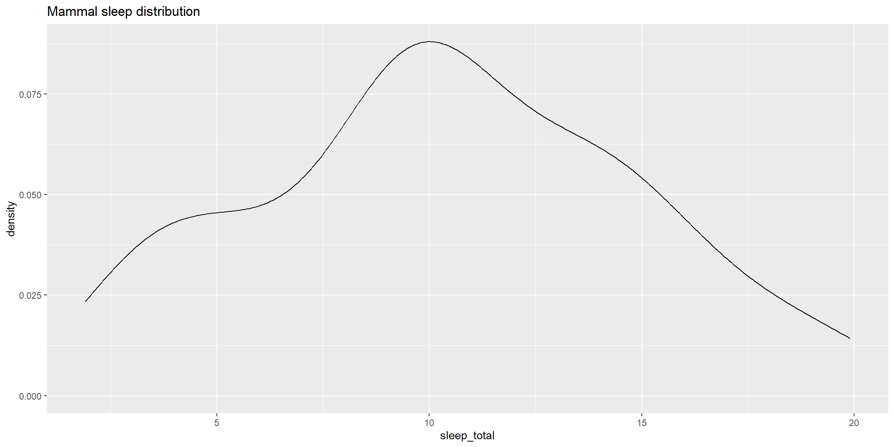
The area under the curve between two time points represents the proportion of mammals in that sleep range.
Code
```{r}# Create a kernel density plot of sleepggplot(msleep, aes(x = sleep_total)) +geom_density(fill ="indianred3") +labs(title ="Mammal sleep distribution")```
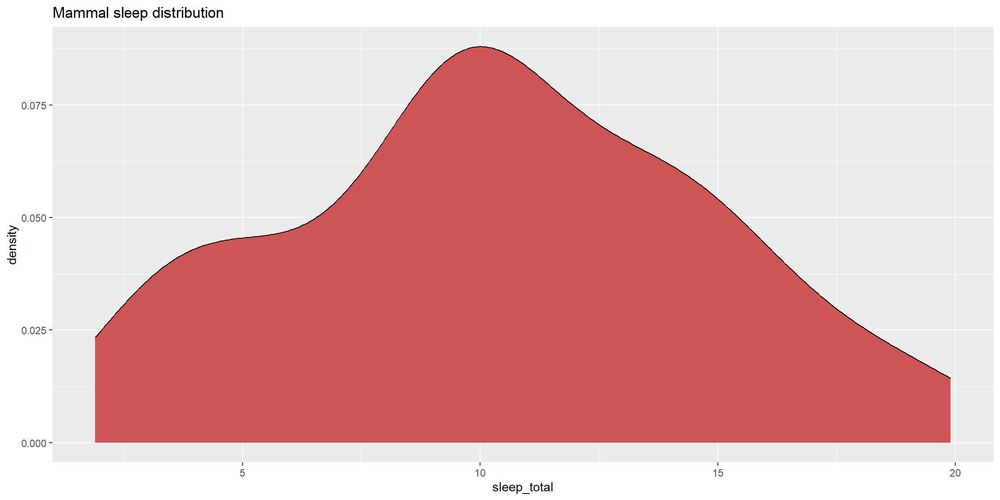
Smoothing parameter
The amount of smoothing is controlled by the bandwidth parameter bw. Larger values produce smoother curves, while smaller values reveal more detail.
Code
```{r}# default bandwidth for the sleep variablebw.nrd0(msleep$sleep_total)```
[1] 1.637473
Code
```{r}# Create a kernel density plot of sleepggplot(msleep, aes(x = sleep_total)) +geom_density(fill ="deepskyblue",bw =1) +labs(title ="Mammal sleep distribution",subtitle ="bandwidth = 1")```
Kernel density plots are useful for identifying where observations are concentrated, although the interpretation of the y-axis can be less intuitive for non-statisticians, so do keep this in mind.
Dot plots
A dot plot is another alternative to the histogram. The data are grouped into bins, but each individual observation is shown as a dot. This approach works best for relatively small datasets like msleep.
Code
# plot the sleep distribution using a dotplotggplot(msleep, aes(x = sleep_total)) +geom_dotplot() +labs(title ="Mammal sleep distribution",y ="Proportion",x ="Total Sleep (hours)")
Many additional options are available; see ?geom_dotplot for further details.
These are just a couple of ways you could visualise one variable, do explore to find more!
---title: "Univariate Data"format: html: fig-width: 12 fig-height: 6 code-fold: show code-tools: true code-block-bg: true code-block-border-left: "#31BAE9" toc: true code-copy: true number_sections: true echo: fenced---A sensible starting point for any data analysis is to look at each important variable on its own. Univariate graphs do exactly this: they show the distribution of a single variable at a time. That variable might be **categorical** (for example diet, taxonomic order, or conservation status) or **quantitative** (such as sleep duration, body weight, or brain weight).Throughout this chapter we use the `msleep` dataset, which contains sleep times and weights for 83 different mammals. We focus on three variables: the diet (`vore`) and taxonomic order (`order`) of the animals, and the total amount of sleep they get (`sleep_total`).---## Categorical variablesBoth the diet of the mammals and their taxonomic order are categorical variables. The distribution of a single categorical variable is most commonly shown using a bar chart. Other options include pie charts, and—less frequently—tree maps or waffle charts.### Bar chartsBelow, we plot a simple bar chart to display the distribution of mammals by diet (`vore`).```{r}#| echo: true#| warning: false#| message: falselibrary(ggplot2)data(msleep, package ="ggplot2")# plot the distribution of diet (vore)# We filter out NAs for a cleaner plotlibrary(dplyr)msleep_clean <- msleep %>%filter(!is.na(vore))ggplot(msleep_clean, aes(x = vore)) +geom_bar()```From this plot we can immediately see that most mammals in this dataset are herbivores, followed closely by omnivores and carnivores, with insectivores being the smallest group.---#### PercentagesInstead of showing raw counts, bars can also represent percentages. In a bar chart, `aes(x = vore)` is shorthand for `aes(x = vore, y = after_stat(count))`, where `count` is the frequency in each category. By working with this quantity explicitly, we can convert counts into percentages.```{r}# plot the distribution as percentagesggplot(msleep_clean,aes(x = vore, y =after_stat(count/sum(count)))) +geom_bar() +labs(x ="Diet",y ="Percent",title ="Mammals by diet") +scale_y_continuous(labels = scales::percent)```Here, the `scales` package is used to format the y-axis labels as percentages.---#### Sorting categoriesIt is often helpful to order categories by their frequency. To do this, we first calculate the counts explicitly and then reorder the categories using `reorder()`. Setting `stat = "identity"` tells `ggplot2` not to compute counts internally.```{r}# calculate number of mammals in each diet categoryplotdata <- msleep_clean %>%count(vore)```The resulting dataset is shown below:| vore | n || ---| ---|| carni | 19 || herbi | 32 || insecti | 5 || omni | 20 |We can now use this dataset to create a sorted bar chart.```{r}# plot the bars in ascending orderggplot(plotdata,aes(x =reorder(vore, n), y = n)) +geom_bar(stat="identity") +labs(x ="Diet",y ="Frequency",title ="Mammals by diet")```The bars are ordered from smallest to largest frequency. Using `reorder(vore, -n)` would reverse this order.---#### Labelling barsSometimes it is useful to display the numerical values directly on the bars.```{r}# plot the bars with numeric labelsggplot(plotdata,aes(x = vore, y = n)) +geom_bar(stat="identity") +geom_text(aes(label = n), vjust=-0.5) +labs(x ="Diet",y ="Frequency",title ="Mammals by diet")```Here, `geom_text()` adds the labels, and `vjust` controls their vertical positioning.Putting these ideas together, we can create a bar chart showing percentages, ordered from most to least frequent, and labelled accordingly.```{r}#| echo: true#| warning: false#| message: falselibrary(scales)plotdata <- msleep_clean %>%count(vore) %>%mutate(pct = n /sum(n),pctlabel =paste0(round(pct*100), "%"))# plot the bars as percentages,# in descending order with bar labelsggplot(plotdata,aes(x =reorder(vore, -pct), y = pct)) +geom_bar(stat="identity", fill="indianred3", color="black") +geom_text(aes(label = pctlabel), vjust=-0.25) +scale_y_continuous(labels = percent) +labs(x ="Diet",y ="Percent",title ="Mammals by diet")```---#### Overlapping labelsWhen there are many categories or when labels are long, axis labels can overlap. This is clear when plotting the taxonomic order of the mammals.```{r}# basic bar chart with overlapping labelsggplot(msleep, aes(x=order)) +geom_bar() +labs(x ="Taxonomic Order",y ="Frequency",title ="Mammals by Order")```One solution is to flip the axes.```{r}# horizontal bar chartggplot(msleep, aes(x = order)) +geom_bar() +labs(x ="",y ="Frequency",title ="Mammals by Order") +coord_flip()```Alternatively, labels can be rotated.```{r}# bar chart with rotated labelsggplot(msleep, aes(x=order)) +geom_bar() +labs(x ="",y ="Frequency",title ="Mammals by Order") +theme(axis.text.x =element_text(angle =45, hjust =1))```A third option is to stagger the labels by inserting line breaks.```{r}# bar chart with staggered labelslbls <-paste0(c("","\n"), unique(msleep$order))# Note: In real usage, ensure labels match factor levels orderggplot(msleep,aes(x=factor(order, labels = lbls))) +geom_bar() +labs(x ="",y ="Frequency",title ="Mammals by Order")```In practice, it is usually best to avoid rotated labels where possible, as they are harder to read and increase cognitive load for the reader.---### Pie chartsPie charts are often debated in statistics. For comparing category frequencies, bar charts are generally superior because humans judge lengths more accurately than areas. However, if the goal is to show how each category relates to the whole, and there are only a few categories, pie charts can still be useful.A pie chart in `ggplot2` is essentially a bar chart plotted on a polar coordinate system.```{r}# Prepare data for pie chartplotdata <- msleep_clean %>%count(vore) %>%mutate(prop = n /sum(n)) %>%mutate(label = scales::percent(prop))# Create pie chartggplot(plotdata, aes(x ="", y = prop, fill = vore)) +geom_bar(stat ="identity", width =1, color ="white") +coord_polar("y", start =0) +theme_void() +labs(title ="Mammals by diet")```We use `coord_polar("y")` to transform the bar chart into a circle. `theme_void()` is used to remove the background, axis grid, and labels that are not necessary for a pie chart.To place labels inside the slices, we can use `geom_text()` with `position_stack()`.```{r}# Create pie chart with labelsggplot(plotdata, aes(x ="", y = prop, fill = vore)) +geom_bar(stat ="identity", width =1, color ="white") +coord_polar("y", start =0) +geom_text(aes(label = label),position =position_stack(vjust =0.5),color ="white",size =4) +theme_void() +labs(title ="Mammals by diet") +theme(legend.position ="right")```This plot makes it clear, for example, that roughly 42% of the mammals in this dataset are herbivores.---### Tree mapsTree maps provide another alternative to pie charts and are particularly useful when there are many categories, such as the taxonomic orders in our dataset.```{r}#| echo: true#| warning: false#| message: falselibrary(treemapify)# create a treemap of mammal ordersplotdata <- msleep %>%count(order)ggplot(plotdata,aes(fill = order, area = n)) +geom_treemap() +labs(title ="Mammals by Order")```Adding labels makes the plot more informative.```{r}# create a treemap with tile labelsggplot(plotdata,aes(fill = order, area = n, label = order)) +geom_treemap() +geom_treemap_text(colour ="white", place ="centre") +labs(title ="Mammals by Order") +theme(legend.position ="none")```---### Waffle chartsA waffle chart (also called a grid plot or square pie chart) represents proportions using a grid of squares. While dedicated packages exist, we can create a waffle chart in standard `ggplot2` by treating the data as a grid of tiles (dedicated packages sometimes get removed so it's better to have a more sustainable way to make graphs that don't rely on external packages).We begin by sorting the data and assigning logical `x` and `y` coordinates to each mammal to create a 10-column grid.```{r}# Prepare data: Sort by diet to cluster colorswaffle_data <- msleep_clean %>%arrange(vore) %>%mutate(# Create x and y coordinates for a 10-column gridx = (row_number() -1) %%10,y = (row_number() -1) %/%10 )# Create the chart using geom_tileggplot(waffle_data, aes(x = x, y = y, fill = vore)) +geom_tile(color ="white") +# white borders create the "grid" lookcoord_fixed() +# ensures squares remain squaretheme_void() +# removes axes and backgroundslabs(title ="Mammals by Diet",caption ="1 square = 1 mammal")```This chart displays every individual mammal as a single square, making it easy to visualise the sample size alongside the proportions.---## Quantitative variablesIn the `msleep` dataset, `sleep_total` (total sleep in hours) is a quantitative variable. Common ways to visualise the distribution of a single quantitative variable include histograms, kernel density plots, and dot plots.### HistogramsHistograms are the most widely used tool for visualising quantitative data. The range of values is divided into adjacent bins of equal width, and the number of observations in each bin is shown as a bar.```{r}#| echo: true#| warning: false#| message: falselibrary(ggplot2)# plot the sleep distribution using a histogramggplot(msleep, aes(x = sleep_total)) +geom_histogram() +labs(title ="Mammal sleep distribution",x ="Total Sleep (hours)")```The distribution appears somewhat bimodal, with many mammals sleeping around 10 hours, but a significant number sleeping much less or much more.---#### Bins and bandwidthsThe choice of the number of bins (or equivalently the bin width) has a large impact on the appearance of a histogram. The default is 30 bins, but it is often useful to experiment.```{r}# plot the histogram with 15 binsggplot(msleep, aes(x = sleep_total)) +geom_histogram(fill ="cornflowerblue",color ="white",bins =15) +labs(title="Mammal sleep distribution",subtitle ="number of bins = 15",x ="Total Sleep (hours)")```Alternatively, you can specify the bin width directly.```{r}# plot the histogram with a binwidth of 2 hoursggplot(msleep, aes(x = sleep_total)) +geom_histogram(fill ="cornflowerblue",color ="white",binwidth =2) +labs(title="Mammal sleep distribution",subtitle ="binwidth = 2 hours",x ="Total Sleep (hours)")```As before, the y-axis can show counts or percentages.```{r}library(scales)ggplot(msleep,aes(x = sleep_total, y=after_stat(count/sum(count)))) +geom_histogram(fill ="cornflowerblue",color ="white",binwidth =2) +labs(title="Mammal sleep distribution",y ="Percent",x ="Total Sleep (hours)") +scale_y_continuous(labels = percent)```---### Kernel density plotsA kernel density plot provides a smooth alternative to a histogram. The idea is to estimate the underlying probability density function of a continuous variable, producing a smooth curve whose total area equals one.```{r}# Create a kernel density plot of sleepggplot(msleep, aes(x = sleep_total)) +geom_density() +labs(title ="Mammal sleep distribution")```The area under the curve between two time points represents the proportion of mammals in that sleep range.```{r}# Create a kernel density plot of sleepggplot(msleep, aes(x = sleep_total)) +geom_density(fill ="indianred3") +labs(title ="Mammal sleep distribution")```---#### Smoothing parameterThe amount of smoothing is controlled by the bandwidth parameter `bw`. Larger values produce smoother curves, while smaller values reveal more detail.```{r}# default bandwidth for the sleep variablebw.nrd0(msleep$sleep_total)``````{r}# Create a kernel density plot of sleepggplot(msleep, aes(x = sleep_total)) +geom_density(fill ="deepskyblue",bw =1) +labs(title ="Mammal sleep distribution",subtitle ="bandwidth = 1")```Kernel density plots are useful for identifying where observations are concentrated, although the interpretation of the y-axis can be less intuitive for non-statisticians, so do keep this in mind.---### Dot plotsA dot plot is another alternative to the histogram. The data are grouped into bins, but each individual observation is shown as a dot. This approach works best for relatively small datasets like `msleep`.```{r}#| echo: true#| warning: false#| message: false# plot the sleep distribution using a dotplotggplot(msleep, aes(x = sleep_total)) +geom_dotplot() +labs(title ="Mammal sleep distribution",y ="Proportion",x ="Total Sleep (hours)")```Many additional options are available; see `?geom_dotplot` for further details. These are just a couple of ways you could visualise one variable, do explore to find more!# Further Resources- [R for Data Science](https://r4ds.had.co.nz/)- [ggplot2 documentation](https://ggplot2.tidyverse.org/)